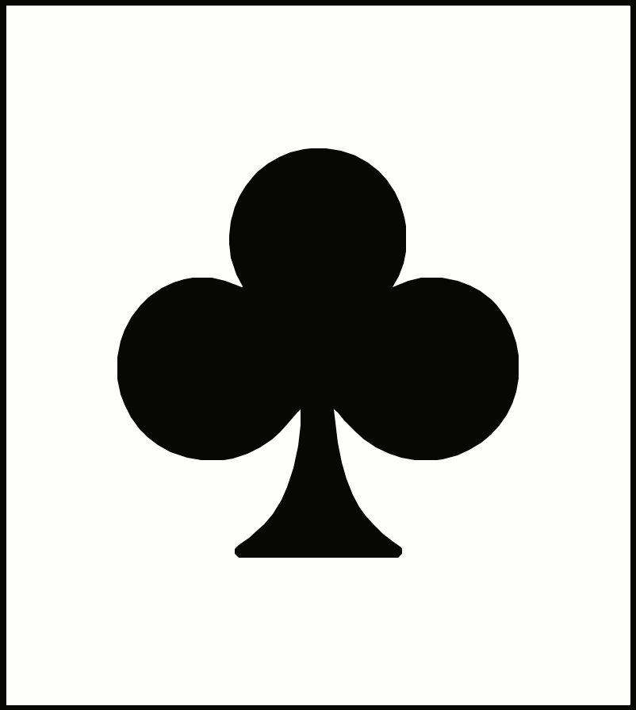
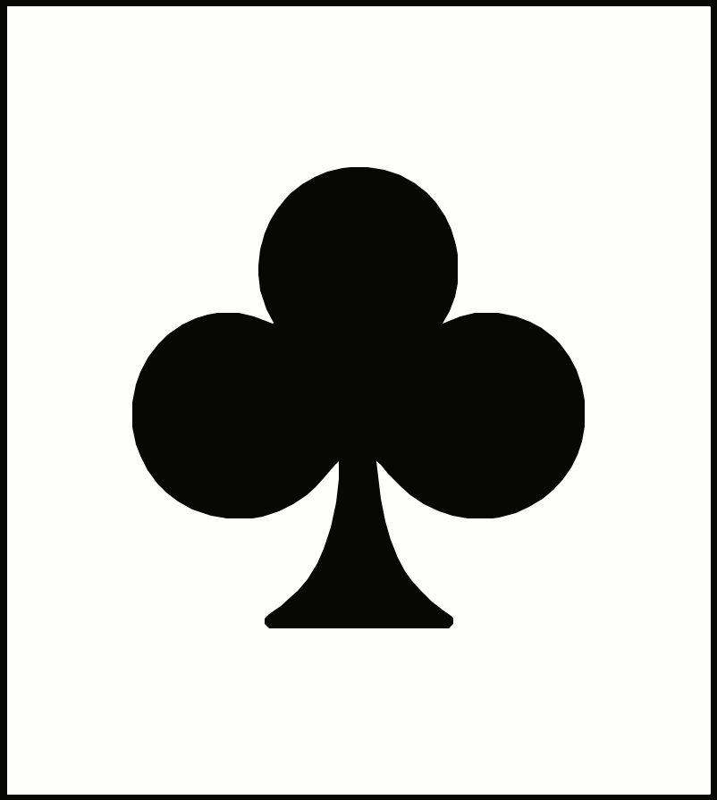

Cartes dans le talon:
0
Score joueur
0
Score ordinateur
0
Annonces
Score:
J:
0
O:
0
Talon: 0
Carte ordinateur
Carte joueur
Pioche

Sélectionne un joueur enregistré ou crée une nouvelle session.
Allons-y, je suis prêt à jouer !
Un jeu traditionnel du Berry, pensé pour 2 joueurs
Le Brézin est un ancien jeu de cartes originaire du Berry, province historique centrée autour de Bourges. Bien que l’entité administrative ait disparu après la Révolution, sa culture a perduré, et le Brézin en est un témoignage.
Dans ma famille, une branche a vécu près de Levroux et Châteauroux. Sans avoir grandi sur place, j’ai reçu ce jeu par transmission orale, de génération en génération. Le Brézin se distingue par un atout rare : il se joue à deux, tout en restant un jeu “évolué”. Aujourd’hui il n’est presque plus pratiqué et ses règles se sont diffusées surtout par récits.
Ce jeu a pour objectif de préserver et partager ces règles de manière ludique : en y jouant.
| Date | Heure | Vainqueur | Score Joueur | Score Ordinateur | Écart | Annonces Joueur | Annonces Ordinateur |
|---|
Deux joueurs – Deux jeux de 32 cartes – Objectif 1000 points
Le vainqueur est le premier joueur qui atteint ou dépasse 1000 points à la fin d’une partie.
7 – 8 – 9 – Valet – Dame – Roi – 10 – As
Les cartes jouées sont placées face cachée dans le tas de plis du joueur qui les a remportées.
Lorsqu’un joueur remporte un pli, il peut immédiatement faire une annonce (une seule à la fois, sauf mention contraire).
Exemples de couples :


| Rang | Points |
|---|---|
| Valets | 40 |
| Dames | 60 |
| Rois | 80 |
| As | 100 |
Les autres carrés ne rapportent aucun point.
Exemple de carré : Carré de Dames (60 points)


Un autre exemple : Carré de Rois (80 points)

Exemple de 7 d’atout : ici l’atout est Trèfle
 

250 points.
Exemple de 250 : Valet, Dame, Roi, 10 et As d’atout (ici Carreau)


Valet de Pique + Dame de Carreau : 40 points.
Exemple de 40 de Brézin

Deux Valets de Pique et deux Dames de Carreau : 500 points.
Exemple de Brézin
Il est possible d’annoncer d’abord un Brézin, puis un Grand Brézin, à condition de n’avoir joué aucune carte appartenant au Brézin annoncé.
0
0